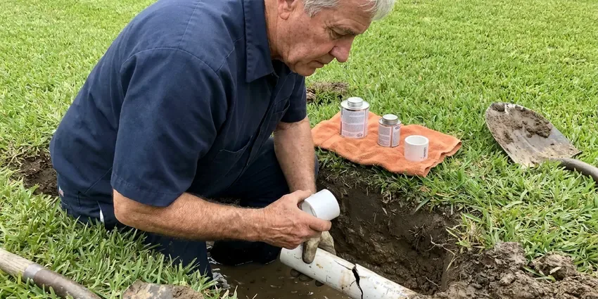

Gas Line Repair in Montpelier, VT
For dependable gas line repair in Montpelier, VT, CKV Plumbing is your trusted local expert. We handle all types of gas line problems safely and efficiently.
- Upfront Pricing Every Time
- Licensed Gas Line Plumbers
- Licensed & Insured Plumbers
- Fast, Local Response

Professional Gas Line Service Available in Montpelier, VT.
Our team is ready to address your gas line concerns promptly and effectively.
Dependable Gas Line Repair for Homes and Businesses in Montpelier, VT
When you suspect a gas leak or need gas line maintenance in Montpelier, VT, CKV Plumbing is the company to call. We specialize in diagnosing problems, performing code-compliant repairs, and ensuring the long-term integrity of your gas system.
Our expertise includes:
- Repair and replacement of natural gas and propane lines.
- Electronic leak detection on meters, risers, yard lines and appliance connections
- Installing new gas appliance connections.

Additional Plumbing Maintenance Services in Montpelier, VT
Our maintenance and specialty plumbing services in Montpelier, VT protect your home year-round and extend the life of every system.


Customers
Why Choose CKV Plumbing for Gas Line Repair in Montpelier, VT?
At CKV Plumbing, we understand the serious nature of gas line repairs and put your safety above all else. Our team is trained in the latest safety protocols and uses modern equipment to make sure every job is completed correctly.
- Experienced Plumbers, Our plumbers have years of experience with various gas piping materials, including black iron pipe, copper, and CSST, providing reliable repairs.
- Safety Focus, Our technicians are trained in gas safety protocols and use specialized equipment to detect and repair leaks the right way.
- Code Compliant, Every repair meets the fuel gas code and is pressure tested before service is restored.
Citywide Coverage
Our commitment extends across all of Montpelier, providing fast and professional gas line repair services to all residents. We're familiar with the varied housing stock in the area and adapt our solutions to fit your particular needs.
Experienced Team
The plumbers at CKV Plumbing are not just skilled, they are gas safety experts. Their extensive background in gas line diagnostics and repair means your home's gas system is in the most capable hands.
Safety-First Approach
For every gas line repair in Montpelier, we ensure adherence to all state and local safety codes. Our commitment to code compliance means that your gas lines are not only repaired but also safe and properly installed for the long term.
Trusted Certified Montpelier Plumbing Services Professionals
At CKV Plumbing, we take pride in providing licensed, certified plumbing services throughout Montpelier, VT. Backed by leading industry credentials, our experienced plumbers combine technical skill with genuine customer care. Whether it is repair, installation, or maintenance, we follow strict safety and quality standards to deliver lasting results you can trust.
Call Us Now PHCC Plumbing Contractor Recognition
PHCC Plumbing Contractor Recognition Better Business Bureau (BBB) Accreditation
Better Business Bureau (BBB) Accreditation Angi Certified Pro
Angi Certified Pro ISO 9001 Quality Management Certification
ISO 9001 Quality Management CertificationDependable Gas Line Repair Services in Montpelier, VT
Gas Line Repair Costs in Montpelier, VT
Simple connector or fitting repairs often cost $150 to $450. Replacing a section of interior pipe typically runs $400 to $1,200, while buried yard line replacement can range from $1,000 to $4,000 or more depending on length and digging conditions. Rocky or hard-packed soil can add labor. We give you a firm written price before we begin.

Black Iron Pipe Repair in Montpelier, VT
Many older homes in Montpelier, VT use black iron pipes for gas lines. While durable, these pipes can corrode over time, especially at joints, leading to leaks. Our team is expert in repairing and replacing sections of black iron pipe, making secure, threaded connections and applying appropriate pipe sealant for a leak-free system. We also check for proper grounding and bonding to prevent electrical corrosion.
Permit & Inspection Guidance in Montpelier
Many gas line repairs, especially those involving major alterations or new installations, require permits and inspections from Montpelier building authorities. We can guide you through this process, ensuring all necessary paperwork is filed and that our work meets the strict requirements for final inspection. This helps guarantee the long-term safety and legality of your gas system.
Interior Black Iron Pipe Repair in Montpelier
Threaded black iron pipe can leak at joints after years of vibration or settling. We tighten, reseal or replace fittings and sections with new pipe and approved thread sealant. Rusted pipe in garages or exterior walls is replaced before it becomes a hazard. We pressure test the system after each repair.
Gas Appliance Line Repair in Montpelier, VT
Your gas furnace, water heater, stove, or dryer relies on a properly functioning gas line. If you notice problems with a specific appliance, the problem might be with its dedicated gas line. We repair or replace faulty appliance connectors, shut-off valves, and flexible supply lines, ensuring all connections are tight and that the correct size and type of line are used for optimal appliance performance and safety in Montpelier, VT.
CSST Repair and Bonding in Montpelier, VT
Corrugated stainless steel tubing is common in newer homes, especially in attics. CSST can be damaged by nails, rodents or lightning, and older yellow jacket CSST needs proper bonding. We repair damaged sections with manufacturer-approved fittings and verify bonding to the electrical system. This lowers the risk of a lightning-related leak during severe storms. Severe summer storms have brought major flooding to valley towns, overwhelming drainage and pushing water back through sewer lines.
Gas Leak Detection & Repair in Montpelier
Suspecting a gas leak is a serious concern, and prompt action is crucial. Our technicians use modern gas leak detection equipment, like electronic sniffers and soap solutions, to pinpoint the exact location of a leak in your home in Montpelier. Once identified, we perform precise repairs, which can involve patching, replacing sections of pipe, or tightening connections, always ensuring the highest safety standards and proper pressure testing after the repair.

Emergency Gas Line Repair in Montpelier
Gas leaks are emergencies that require immediate attention. CKV Plumbing offers emergency gas line repair services in Montpelier to address urgent situations quickly and safely. Our fast response team is equipped to handle critical gas line failures, working efficiently to isolate the leak, perform the necessary repairs, and restore safety to your home, often coordinating with the local gas utility when required.
Gas Line Repair Near Me in Montpelier, VT
As a local company, we are deeply committed to the safety and well-being of our community in Montpelier, VT. We strive to be the fastest and most dependable option for all your gas line repair needs, ensuring a safe and efficient gas system for your home or business.
We know the older yard lines, CSST systems and soil conditions common in Montpelier. That local experience speeds up leak detection and repairs. Your gas service is restored safely and on schedule.
CKV Plumbing at a Glance
- Licensed and insured plumbers serving Montpelier, VT
- Same-day appointments and 24/7 emergency response
- Clear written estimates, no hidden fees
- 4.8-star rated by 553+ Vermont customers
Montpelier Map
Montpelier Information
- Population
- 7,991
- Area codes
- Local
- Service area
- Montpelier and communities within 40 miles
- Nearby
- Barre, St. Johnsbury, Essex Junction, South Burlington
Underground gas lines in Montpelier, VT can shift and corrode as the ground around them moves, so professional repair and maintenance are essential for safety. Rocky glacial soil and ledge are common across Vermont, which can make digging for water lines, sewer repairs or septic work slow and costly.
Expert Services
Trust our professionals for reliable CKV Plumbing solutions in Montpelier, VT.
Our Specialized Plumbing Services in Montpelier, VT
At CKV Plumbing, we provide a complete range of plumbing services across Montpelier, VT. From leak detection to full system installations, our team ensures fast, precise, and affordable service for both residential and commercial properties. Explore our core services below:


Here Is How Our Gas Line Repair Process Works in Montpelier, VT
Gas line repair with us is careful, permitted and tested from start to finish.
Request a Quote
Call (802) 209-5139 after you have reached safety and contacted your gas utility if you smell gas. We dispatch a licensed plumber as soon as possible.
Locate and Repair
We test the system to find the leak and explain the repair options. After your approval, we replace the damaged pipe or fittings to code.
Test and Restore
We pressure test the repaired system and arrange inspection where required. Then we help restore service and relight your appliances.
Frequently Asked Questions About Gas Line Repair in Montpelier
Small fitting or connector repairs typically run $150 to $450. Section replacements cost $400 to $1,200, and buried line replacement can reach $1,000 to $4,000 or more.
Simple repairs take an hour or two. Buried yard line replacements often take a full day, plus inspection time if a permit is required.
The duration of a gas line repair varies. Simple repairs, like tightening a connection or replacing a short segment of pipe, might take a few hours. More complex issues, such as replacing a long section of underground line, could take a full day or even longer, depending on the scope of work.
Utilities lock the meter when they find a leak or failed pressure test. A licensed plumber must repair the issue and pass a test before service is restored.
No, gas piping should be repaired by a licensed professional. Mistakes can cause fires, explosions or carbon monoxide problems, and DIY work may not pass inspection.
Yes, many major gas line repairs and all new gas line installations in Montpelier typically require a permit from local building authorities. This confirms the work meets safety codes. CKV Plumbing will advise you on permit requirements and can help arrange the necessary inspections.
Many gas repairs and all new gas piping need a permit and inspection from the local building department. We handle the permit and scheduling for you.
CSST is approved and widely used when installed and bonded correctly. We verify bonding and repair damaged sections with approved parts.
What People Are Saying About Our Plumbing Experts?

Sofia M.
Two new toilets installed in one visit, no mess left behind, and the tech even adjusted a faucet he noticed was dripping. Fair pricing and really friendly.
Toilet Installation · Shelburne, VT
Daniel K.
A pipe burst at 11 pm and they actually answered. The plumber showed up within the hour, shut everything down, and had us back to normal the next morning. Could not ask for more.
Emergency Plumbing · Barre, VT
James P.
Our commercial plumbing system had a leak under the sink, and CKV Plumbing handled it professionally. The plumbers arrived quickly and restored everything without disruption to our customers.
Commercial Plumbing · St. Johnsbury, VTLaura S.
I scheduled a water heater replacement, and the team made the process smooth and affordable. The new unit works perfectly, and they cleaned up after completing the job.
Water Heater Replacement · Shelburne, VT
Mark T.
When our office needed drain cleaning, CKV Plumbing provided quick, reliable service. The plumber arrived on time and made sure every drain flowed perfectly before leaving. Very satisfied.
Drain Cleaning · Middlebury, VTRobert G.
The trenchless sewer replacement saved our front yard. They walked us through the camera inspection footage first so we knew exactly what we were paying for.
Sewer Line Replacement · Middlebury, VT